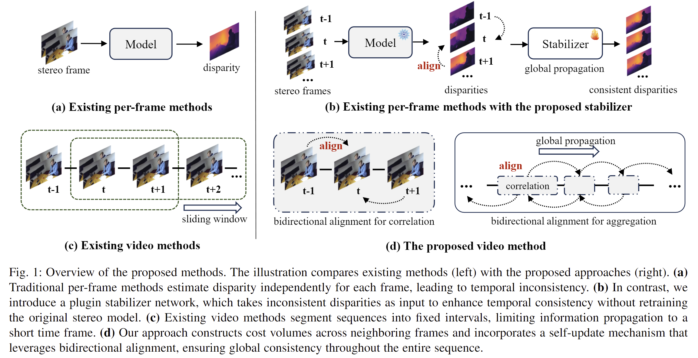

Comparsion with existing methods

Video stereo matching is the task of estimating consistent disparities from stereo videos. There is considerable scope for improvement in both datasets and methods within this field. Recent learning-based methods often focus on optimizing performance for single stereo pairs, leading to temporal inconsistencies. Existing video methods typically employ sliding window operation over time, which can result in low-frequency oscillations corresponding to the window size. To address these challenges, we propose a bidirectional alignment mechanism for adjacent frames as a fundamental operation. Building on this, we introduce a novel video processing framework, BiDAStereo, and a stabilizer network plugin, BiDAStabilizer, which is compatible with general per-frame methods. Regarding datasets, current synthetic object-based and indoor datasets are commonly used for training and benchmarking, with a lack of outdoor datasets. To bridge this gap, we present a realistic synthetic dataset and benchmark focused on natural scenes, along with a real-world dataset captured by a stereo camera in diverse scenarios for qualitative evaluation. Extensive experiments on in-domain, out-of-domain, and robustness evaluation demonstrate the contribution of our methods and datasets, showcasing improvements in prediction quality and achieving state-of-the-art results on various commonly used benchmarks.
Current stereo depth datasets are limited in both diversity and realism. There is no diversified real-world stereo video dataset for visualization and qualitative comparison. To compensate for the data shortage and boost the performance of learning-based video stereo models, we release a real-world dataset SouthKensington Stereo Video Dataset (Southken SV), and a synthetic dataset, Infinigen Stereo Video Dataset (Infinigen SV).
This Link specify your download requirements. The releasing of SK-SV dataset is under strict conditions. SK-SV dataset cannot be used or distributed for any commercial purposes. It can only be used for academic and research purposes. SK-SV dataset is licensed under Creative Commons Attribution-NonCommercial-ShareAlike 4.0 International (CC BY-NC-SA 4.0). Under this license, if you want to modify SK-SV or generate new data from SK-SV dataset (e.g., super-resolution, denoising, defocus), the releasing of your new data should be licensed under the same CC BY-NC-SA 4.0. If you need more help or information, please contact: {j.jing23; ye.mao21}@imperial.ac.uk.
@article{jing2024match,
title={Match stereo videos via bidirectional alignment},
author={Jing, Junpeng and Mao, Ye and Qiu, Anlan and Mikolajczyk, Krystian},
journal={arXiv preprint arXiv:2409.20283},
year={2024}
}